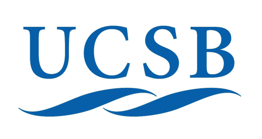

IDEAs Internacionais
Universidade da Califórnia (UCSB), EUA
O funcionamento dessa IDE para ambiente acadêmico data de 1979, assim considerada a mais antiga, e cataloga dados espaciais em diversos formatos. Está localizada na Biblioteca Digital Alexandria (The Alexandria Digital Library – ADL), sedno que o Laboratório de Mapas e Imagens (Map & Imagery Laboratory – MIL) contém mapas, fotografias aéreas e outros tipos de dados provenientes de sensoriamento remoto, além de dados SIG de todo o planeta. É uma das maiores coleções deste tipo de dados em bibliotecas acadêmicas, servindo às necessidades acadêmicas e de pesquisa para própria universidade e instituições externas ao meio acadêmico, como indústria e governo estadual e federal.

Digimap (EDINA), Reino unido
O armazenamento e disponibilização de dados da Universidade de Edimburgo é feito pela solução webmapa Digimap, que faz parte de um conjunto de serviços desenvolvidos por EDINA. Essa solução desenvolve e disponibiliza um conjunto de serviços e experiências que beneficiam pesquisas e o ensino a nível nacional e internacional, é nas versões For Colleges, For Schools, MapStream e OpenStream, todas com acesso restrito.